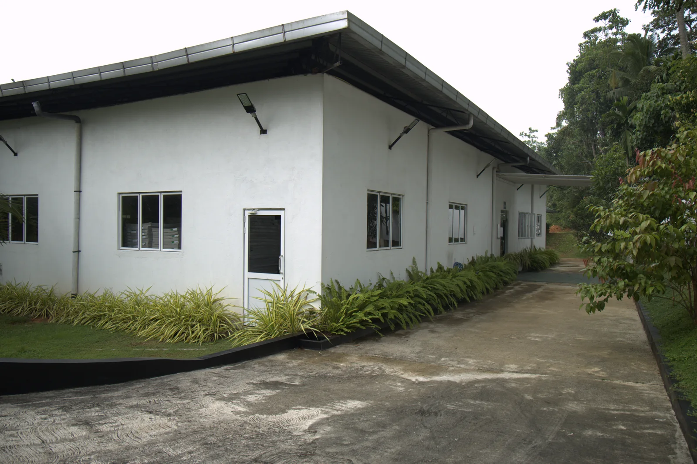
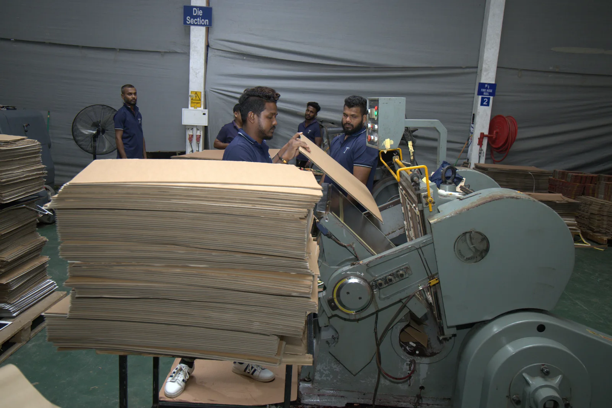

Our Vision
To be the region’s most trusted innovator in value-added corrugated packaging, delivering safe, durable, and sustainable solutions that strengthen brands and protect products.

ABOUT US
A Sri Lankan packaging business offering corrugated cartons, printed packaging and custom structures.


WHO WE ARE
Techno Industries is an ISO-certified manufacturer specializing in value-added corrugated packaging for local and international markets. Part of Techno Group, the company combines technical expertise, manufacturing technology and food-grade certified materials to produce packaging with durability, structural integrity and product presentation in mind.
We serve exporters, manufacturers, supermarkets, plantations, retailers and logistics companies, with a commitment to continuous improvement, sustainability and strict quality control.
Our CapabilitiesA strategic arm of Techno Group.
To be the region’s most trusted innovator in value-added corrugated packaging, delivering safe, durable, and sustainable solutions that strengthen brands and protect products.
Quality, innovation and customer service underpin our value-added corrugated packaging solutions.
Our strength lies in combining technical expertise, advanced manufacturing technology and food-grade certified materials. The product range covers corrugated and die-cut packaging as well as handmade, recycled, gift, wooden and PVC boxes.
Explore the product range ↗The corporate group comprises Techno Industries, Grand Techno and Green Techno Farm.
Explore Green Techno Farm ↗OUR LEADERSHIP
Quality, innovation and customer service are central to our approach to packaging.
Our commitments to continuous improvement, sustainability and strict quality control support the durability, structural integrity and presentation of our packaging.

OUR APPROACH
Technical expertise, manufacturing technology, food-grade certified materials and strict quality control support the durability, structural integrity and presentation of our packaging.
Our quality approachABOUT US
A Sri Lankan packaging business offering corrugated cartons, printed packaging and custom structures.
WHO WE ARE
Techno Printpack is a Sri Lankan packaging business within the Techno Group. The group’s packaging division, Techno Industries, manufactures value-added corrugated packaging for local and export applications.
Our range includes corrugated cartons, printed packaging, die-cut structures and PVC packaging options. Share your product dimensions, handling needs and print requirements so our team can discuss a suitable packaging solution.
Our CapabilitiesPart of a group spanning manufacturing, agriculture and hospitality.
The group’s vision brings together integrity, innovation and excellence, creating value for customers and communities.
The group’s mission emphasizes responsible growth, professional standards, useful technology and lasting partnerships.
Explore corrugated cartons, printed packaging, die-cut structures and PVC options with one team. Share your dimensions, artwork and handling requirements to review the structure, materials and finish together.
Explore our manufacturing capabilities ↗Techno Group connects packaging manufacturing through Techno Industries, plantation agriculture through Techno Farm, and hospitality through Grand Techno. The vision, mission and values above reflect the group’s published direction.
Explore our manufacturing capabilities ↗OUR APPROACH
From material selection to printing and finishing, define the details that matter for your product. Discuss dimensions, structure and quality requirements with our team.
Our quality approachABOUT US
A Sri Lankan packaging business offering corrugated cartons, printed packaging and custom structures.
WHO WE ARE
Techno Industries is an ISO-certified manufacturer specializing in value-added corrugated packaging for local and international markets. Part of Techno Group, the company combines technical expertise, manufacturing technology and food-grade certified materials to produce packaging with durability, structural integrity and product presentation in mind.
We serve exporters, manufacturers, supermarkets, plantations, retailers and logistics companies, with a commitment to continuous improvement, sustainability and strict quality control.
Our CapabilitiesA strategic arm of Techno Group.
To be the region’s most trusted innovator in value-added corrugated packaging, delivering safe, durable, and sustainable solutions that strengthen brands and protect products.
Quality, innovation and customer service underpin our value-added corrugated packaging solutions.
Our strength lies in combining technical expertise, advanced manufacturing technology and food-grade certified materials. The product range covers corrugated and die-cut packaging as well as handmade, recycled, gift, wooden and PVC boxes.
Explore the product range ↗The corporate group comprises Techno Industries, Grand Techno and Green Techno Farm.
Explore Green Techno Farm ↗OUR APPROACH
Technical expertise, manufacturing technology, food-grade certified materials and strict quality control support the durability, structural integrity and presentation of our packaging.
Our quality approach